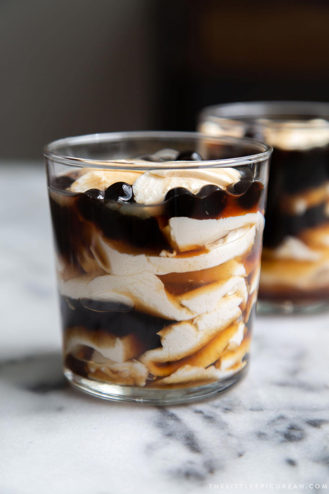
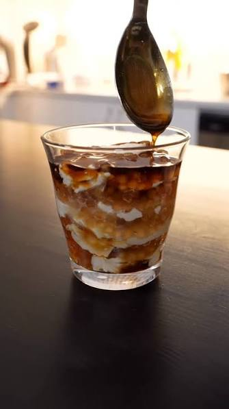
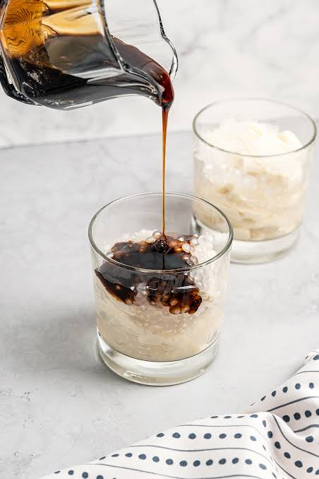

Home
Cold Taho Recipe



Description
Ingredients
For the Taho base
- 1 liter unsweetened soy milk
- 2 tbsp unflavored gulaman powder (or 3 packets of gelatin powder for a firmer set)
For the sweet syrup (Arnibal)
- ½ cup brown sugar (or muscovado)
- ½ cup water
1 tsp vanilla extract (optional)
For the toppings
- 1 cup cooked tapioca pearls (boba)
Steps
- In a saucepan, combine the soy milk and gulaman powder. Heat over medium heat, stirring constantly until the mixture thickens and starts to boil. Remove from heat and let it cool slightly.
- Pour the mixture into serving cups or bowls and let it set in the refrigerator for at least 2 hours, or until firm.
- In another saucepan, combine the brown sugar and water. Heat over medium heat, stirring until the sugar dissolves. Let it simmer for a few minutes until it thickens slightly. Remove from heat and stir in the vanilla extract if using.
- To serve, spoon the sweet syrup over the set taho base and top with cooked tapioca pearls.
- Enjoy your refreshing cold taho!